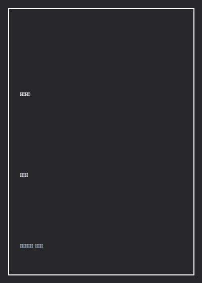

《四喜忧国》

总体观点
《四喜忧国》是台湾小说大师张大春早期最具锋芒与批判力量的短篇小说集代表作。全书收录了包括同名核心名篇《四喜忧国》《鸡翎图》《战前生活》《姜婆打脸》《饥饿》在内的八篇传世名作。张大春以近乎外科手术刀般冰冷尖锐、又充斥着狂欢戏谑的语言实验，将刀锋精准刺向了戒严时期至后戒严时代台湾社会弥漫的政治意识形态谵妄、虚妄的宏大叙事以及小人物在历史车轮下的精神残疾。
同名名篇《四喜忧国》塑造了华语文学长廊中极具悲喜交织力量的小人物典型——退伍军人、现任社区防空监视哨兼里长杂役朱四喜。朱四喜身材矮小、智识有限，却终日沉溺在“反攻大陆、拯救亿万受苦同胞”的宏大政治幻觉之中。在国民党政权逐步走向解严、两岸坚冰松动、社会全面转向大众消费与娱乐狂欢的转型节点上，只有朱四喜一个人在破旧的榻榻米上急得彻夜失眠。他自命为背负天下兴亡的民族救星，在昏暗的煤油灯下一笔一划草拟给蒋总统与全同胞的《告全国军民同胞书》，甚至企图以绝食请愿唤醒麻木的世人。
小说的绝妙与残忍之处在于张大春对“崇高之滑稽”的极速解构：当朱四喜满怀悲壮地冲向街头散发传单时，根本无人理会他的爱国宏论，路人只是将他当成兜售壮阳药广告的疯癫小贩；他的妻子忙着打麻将偷汉子，邻居青年忙着炒股票买汽车，只有他一个人被永远冻结在三十年前军营广播喇叭的政治旧梦里。张大春以天才般的笔触撕开了极权口号对小人物灵魂的深度洗脑与异化，展现了当个体将全部生命依附于宏大政治泡沫时，最终在时代列车呼啸而过时沦为小丑的悲凉宿命。
核心观点
-
1. 口号洗脑的精神畸形：小人物在宏大叙事中的深度自我感动
极权宣传最恶毒之处在于让底层的卑微受害者反向对宏大政治话语产生生理性依赖。退伍老兵以为自己是国家的顶梁柱，实质不过是弃置的耗材。
朱四喜在破收音机里听到对岸发生洪涝灾害的消息，饭都吃不下，在屋里捶胸顿足嚎啕大哭：“同胞在受苦受难啊，我们怎么还能在此苟且偷生！” -
2. 时代的急速脱轨：当社会拥抱世俗欲望时意识形态遗老沦为小丑
历史大潮转向消费主义与世俗生活时，曾经被奉为神圣的政治忠诚在一夜之间贬值为可笑的神经质障碍。执迷不悟者被时代列车无情甩在月台之外。
朱四喜在菜市场高声朗读自己起草的痛斥享乐主义万言书，买菜的大妈嫌弃地推开他：“神经病，别挡着我挑带鱼，今天股票又涨了五十点！” -
3. 家庭微观世界的荒诞讽刺：忧国者连自家的红杏出墙都无力察觉
终日将心智挂在天下兴亡宏大命题上的人，往往对身边最基本的生活真实彻底盲目。崇高的大词掩盖了私人生活的彻底破产与可悲失控。
朱四喜在书桌前通宵达旦修改上呈中央的救国策论，浑然不知妻子正隔着一道薄薄的木板墙，在隔壁房间里与卖猪肉的屠户颠鸾倒凤。 -
4. 后现代拼贴叙事：新闻公报、公文格式与狂想自白的魔幻杂糅
张大春将官方党报社论的八股辞令、军营戒严通告与市井粗鄙方言无缝嫁接，以形式本身的荒诞对抗内容的正统，引爆强烈的黑色幽默张力。
小说通篇充斥着朱四喜草拟的公文摘录，满篇皆是“戡乱剿匪”、“共匪猖獗”、“忠贞赤胆”的陈词滥调，与他脚上踩着的人字拖和长满冻疮的双脚形成滑稽反差。 -
5. 狂热信仰崩塌的终极虚无：在自我感动的废墟中走向精神自戕
当一个人毕生信奉的崇高神话被现实无情戳破为一场谎言骗局时，他的世界便彻底瓦解。要么彻底疯癫，要么在自绝于世中完成最后的荒诞谢幕。
在小说终局，朱四喜抱着厚厚一叠救国传单站在十字路口，任由急驰而过的豪华轿车将泥水泼满全身，在滚滚车流的刺耳喇叭声中陷入永恒的痴呆痴笑。
全书结构
-
核心篇章《四喜忧国》（退伍军人的救国狂想大戏）
详尽刻画老兵朱四喜如何在一则微小社会新闻刺激下陷入拯救国家民族的神经质狂热，通宵草拟救国策论却在街头被世人视作疯癫小丑的全过程。
朱四喜用毛笔在旧挂历背面颤抖写下“中华民国万岁”，自掏腰包花去全家当月菜钱复印了五百份传单，清晨雄赳赳气昂昂走上街头散发。 -
第二篇章《鸡翎图》与《战前生活》（威权时代的日常荒诞）
聚焦戒严时期军营与眷村的小人物生态，展现无所不在的政治告密、假想敌恐惧以及底层士官在官僚体制夹缝中的苟且求存。
《鸡翎图》中描绘军营里一只羽毛奇特的花公鸡引发特务机关的高度紧张，成立专案组审讯公鸡是否系对岸空投的心战特务工具。 -
第三篇章《姜婆打脸》与《饥饿》（民间欲望与肉体狂欢）
转向台湾民间乡土风俗，以极具魔幻现实色彩的笔法描绘古老巫医打脸转运仪式，以及人在物质极度匮乏面前肉体饥饿与道德的剧烈冲突。
姜婆挥动布满老茧的巴掌狠狠扇在求仕途官运的乡绅脸上，啪啪作响中围观群众齐声喝彩，展现民间迷信与功利欲望的丑陋共谋。 -
第四篇章《最后的先知》与《寻找莲花》（神话的破灭与尾声）
以寓言化笔调探讨现代都市人对神秘救世主的盲目渴求与偶像崩塌，为全书对宏大叙事的系统解构画上冷峻清醒的句号。
全城百姓疯狂追逐一位号称能让盲人复明的江湖术士，直到暴雨冲刷掉术士身上的金粉，人们才发现他不过是一个流窜多年的通缉骗子。